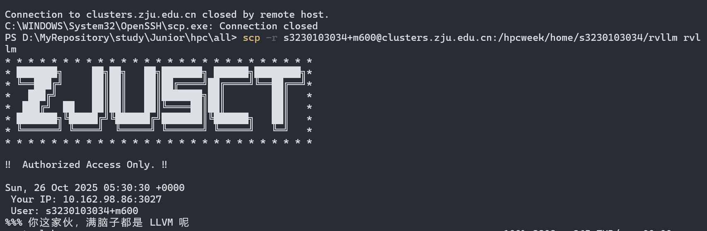

HPCWeek - 2025
约 2044 个字 1828 行代码 4 张图片 预计阅读时间 30 分钟
Abstract
参赛Writeup - rk 17 虽然没有名次……但是第一次做感觉已经尽力了。
纪念：


环境配置相关
ssh 连接
1. 在 Windows 上查找你已配置的 SSH Key
- 打开文件资源管理器。
- 在地址栏中输入
%USERPROFILE%\.ssh然后按回车键。
*%USERPROFILE%是一个系统变量，它会自动指向你当前用户的文件夹，例如C:\Users\YourUsername。 - 进入
.ssh文件夹后，你会看到一些文件。这些就是你的 SSH Key 文件：
*id_rsa或id_ed25519: 这是你的私钥 (Private Key)。 绝对不要泄露或分享这个文件！
*id_rsa.pub或id_ed25519.pub: 这是你的公钥 (Public Key)。这个文件可以安全地分享给你需要连接的服务器（如 GitHub, GitLab, 或你的云主机）。
*known_hosts: 这个文件记录了你曾经连接过的服务器的指纹，用于防止中间人攻击。
*config: (可选) 这是一个配置文件，你可以用它来为不同的主机设置别名和特定的连接参数。
2. ZJULab 配置 ssh
在 这里 复制id_rsa.pub。
3. 终端 ssh 连接

Vscode in WSL
开权限
slowist@Slowist:/home/HPC$ sudo chown -R slowist:slowist /home/HPC
Quine
“Quine” 也可称为 "selfrep"，是一个计算机程序，执行后，打印出自身源码。
首先定义字符串*DNA*。这里我们不知道“DNA”的内容，所以先用emoji符号代替。因为这个
字符串里面包含了两部分内容：头和尾，我们假设头是老虎，尾巴是蛇：
dna = '🐱,🐍'
然后把头和尾巴取出来：
head, tail = dna.split(',')
因为我们打算用16进制编码，所以这里要把头和尾都用16进制解码恢复成原来的样子：
head = bytes.fromhex(head).decode('utf-8')
tail = bytes.fromhex(tail).decode('utf-8')
最后，我们把头、DNA、尾巴，这三部分拼接起来，一起输出：
print(head + dna + tail)
现在的程序是这样的：
dna = '🐱,🐍'
head, tail = dna.split(',')
head = bytes.fromhex(head).decode('utf-8')
tail = bytes.fromhex(tail).decode('utf-8')
print(head + dna + tail)
类似的思路写Shell
dna='646e613d27,270d0a4946533d272c273b20736574202d2d2024646e613b20686561643d24313b207461696c3d24320d0a686561643d24286563686f2022246865616422207c20787864202d72202d70290d0a7461696c3d24286563686f2022247461696c22207c20787864202d72202d70290d0a6563686f2022246865616424646e61247461696c22'
IFS=','; set -- $dna; head=$1; tail=$2
head=$(echo "$head" | xxd -r -p)
tail=$(echo "$tail" | xxd -r -p)
echo "$head$dna$tail"
Parallel Compress
1. 跑通Baseline
下载Baseline，安装依赖，然后make
slowist@Slowist:/home/HPC/parallel_compress$ tar -xzf baseline.tar.gz
slowist@Slowist:/home/HPC/parallel_compress$ sudo apt install libhts-dev
slowist@Slowist:/home/HPC/parallel_compress$ sudo apt install gcc
slowist@Slowist:/home/HPC/parallel_compress/baseline$ sh compile.sh
rm -f compress
gcc -Wall -Wextra -O3 -fopenmp -o compress compress.c -lhts -lpthread
slowist@Slowist:/home/HPC/parallel_compress/baseline$ ./compress
Usage: ./compress <infile> <outfile>
可以看到一般的执行，由于没有输入输出是不行的。在GPT的指导下随机生成512M文件：
slowist@Slowist:/home/HPC/parallel_compress/baseline$ dd if=/dev/urandom of=test.dat bs=1M count=512
512+0 records in
512+0 records out
536870912 bytes (537 MB, 512 MiB) copied, 1.29533 s, 414 MB/s
至此Baseline跑通；
2. htslib 提供接口加速
根据题目提示，去找C接口的定义；
官方文档：[here](htslib/htslib/bgzf.h at develop · samtools/htslib](https://github.com/samtools/htslib/blob/develop/htslib/bgzf.h#L378) 在Gemini的帮助下还是看得懂的。
找到bgzf_thread_pool的函数定义：
int bgzf_thread_pool(BGZF *fp, hts_tpool *pool, int qsize) {
// No gain from multi-threading when not compressed
if (!fp->is_compressed)
return 0;
mtaux_t *mt;
mt = (mtaux_t*)calloc(1, sizeof(mtaux_t));
if (!mt) return -1;
fp->mt = mt;
mt->pool = pool;
mt->n_threads = hts_tpool_size(pool);
if (!qsize)
qsize = mt->n_threads*2;
if (!(mt->out_queue = hts_tpool_process_init(mt->pool, qsize, 0))) {
free(mt);
return -1;
}
hts_tpool_process_ref_incr(mt->out_queue);
mt->job_pool = pool_create(sizeof(bgzf_job));
pthread_mutex_init(&mt->job_pool_m, NULL);
pthread_mutex_init(&mt->command_m, NULL);
pthread_mutex_init(&mt->idx_m, NULL);
pthread_cond_init(&mt->command_c, NULL);
mt->flush_pending = 0;
mt->jobs_pending = 0;
mt->free_block = fp->uncompressed_block; // currently in-use block
mt->block_address = fp->block_address;
pthread_create(&mt->io_task, NULL,
fp->is_write ? bgzf_mt_writer : bgzf_mt_reader, fp);
return 0;
}
int bgzf_thread_pool(BGZF *fp, hts_tpool *pool, int qsize);
BGZF *fp: 一个已经通过bgzf_open()打开的BGZF文件句柄。必须是以写入（"w"）或读取（"r"）模式打开的。hts_tpool *pool: 指向一个已经初始化的HTSlib线程池的指针。这是关键：调用者负责创建和销毁这个线程池。int qsize: 内部任务队列的大小。如果传入0，函数会根据线程池中的线程数量选择一个合理的默认值（通常是线程数 * 2）。
然后利用这个API编写代码：
#include <stdio.h>
#include <stdlib.h>
#include <string.h>
// 关键头文件
#include "htslib/bgzf.h"
#include "htslib/thread_pool.h"
int main() {
// --- Step 1: 创建 HTSlib 线程池 ---
int n_threads = 4;
hts_tpool *pool = hts_tpool_init(n_threads);
if (!pool) {
fprintf(stderr, "Error creating thread pool\n");
return 1;
}
printf("Created a thread pool with %d threads.\n", n_threads);
// --- Step 2: 打开 BGZF 文件 ---
const char *filename = "output.threaded.gz";
// "w" 表示写入，也可以添加压缩级别，如 "w4"
BGZF *fp = bgzf_open(filename, "w");
if (fp == NULL) {
fprintf(stderr, "Could not open %s for writing\n", filename);
hts_tpool_destroy(pool); // 清理线程池
return 1;
}
printf("Opened %s for writing.\n", filename);
// --- Step 3: 关联线程池 ---
// qsize 设置为 0，使用默认队列大小
if (bgzf_thread_pool(fp, pool, 0) < 0) {
fprintf(stderr, "Error associating thread pool with BGZF handle\n");
bgzf_close(fp);
hts_tpool_destroy(pool);
return 1;
}
printf("Successfully associated thread pool with BGZF file.\n");
// --- Step 4: 执行写操作 (和单线程代码一样) ---
const char *data = "This is a line of text that will be compressed. It will be written many times to create a large file.\n";
size_t data_len = strlen(data);
long total_written = 0;
printf("Writing data...\n");
for (int i = 0; i < 100000; ++i) {
if (bgzf_write(fp, data, data_len) != data_len) {
fprintf(stderr, "Error writing to BGZF file\n");
break;
}
total_written += data_len;
}
printf("Finished writing. Total uncompressed bytes: %ld\n", total_written);
// --- Step 5: 关闭 BGZF 文件 ---
// bgzf_close() 会等待所有后台压缩任务完成
printf("Closing BGZF file (this will flush all remaining blocks)...\n");
if (bgzf_close(fp) < 0) {
fprintf(stderr, "Error on bgzf_close\n");
}
// --- Step 6: 销毁线程池 ---
// 必须在 bgzf_close() 之后调用
printf("Destroying thread pool.\n");
hts_tpool_destroy(pool);
printf("Done.\n");
return 0;
}
最后把线程数开到52；
CT
FFT优化
一开始看到有很多卷积操作，然后开始FFT优化；因为没法调库，所以只能手写Radix-4 FFT；
#include <cmath>
#include <algorithm>
#include <vector>
#include <omp.h>
#include <arm_neon.h>
#include "fbp.h"
#include <complex> // 新增的包含，确保 std::complex 可用
constexpr double PI = 3.14159265358979323846;
/**
* Generate Ramp filter kernel in spatial domain
*
* @param len Kernel length (will be made odd if even)
* @param d Detector pixel spacing (default 1.0)
* @return Symmetric filter kernel centered at middle
*/
static std::vector<float> ramp_kernel(int len, float d = 1.0f) {
if (len % 2 == 0) len += 1; // Ensure odd length for symmetry
int K = len / 2; // Center index
std::vector<float> h(len, 0.0f);
// Center value
h[K] = 1.0f / (4.0f * d * d);
// Symmetric side lobes (only odd positions have non-zero values)
for (int n = 1; n <= K; ++n) {
if (n % 2 == 1) {
float val = -1.0f / (float(PI) * float(PI) * n * n * d * d);
h[K + n] = val;
h[K - n] = val;
}
}
return h;
}
// =================================================================
// FFT-based convolution and related functions
// =================================================================
/**
* @brief 执行 in-place Radix-4 快速傅里叶变换 (FFT) 或其逆变换 (IFFT)。
*
* 该函数使用 Decimation-In-Time (DIT) Radix-4 算法。
* 为获得最佳性能，输入向量的大小必须是4的幂。
*
* @param data 一个复数向量。函数将直接修改此向量。其大小必须是4的幂。
* @param inverse 如果为 false (默认)，则计算正向FFT。
* 如果为 true，则计算逆向FFT。
* 注意：此函数不执行逆变换后的 1/N 缩放，调用者需要自行处理。
*/
void radix4_fft(std::vector<std::complex<float>>& data, bool inverse = false) {
const size_t N = data.size();
// --- 1. 输入验证 ---
if (N == 0) {
return;
}
// 检查N是否为4的幂 (如果输入保证正确可以注释掉以提升性能)
// size_t temp_check = N;
// if ((N & (N - 1)) != 0 && N != 1) { // 快速检查是否是2的幂
// throw std::invalid_argument("Vector size for Radix-4 FFT must be a power of 4.");
// }
// while (temp_check > 1) {
// if (temp_check % 4 != 0) {
// throw std::invalid_argument("Vector size for Radix-4 FFT must be a power of 4.");
// }
// temp_check /= 4;
// }
// --- 2. 4基位反转 (Radix-4 Bit-Reversal Permutation) ---
// 这个步骤将数据重新排序，以便蝶形运算可以就地执行。
// j 是 i 的4基反转后的索引。
size_t j = 0;
for (size_t i = 1; i < N; ++i) {
size_t k = N / 4;
while (j >= 3 * k) {
j -= 3 * k;
k /= 4;
}
j += k;
if (i < j) {
std::swap(data[i], data[j]);
}
}
// --- 3. 蝶形运算 (Butterfly Operations) ---
// 确定旋转因子的角度符号
const float angle_sign = inverse ? 1.0f : -1.0f;
const std::complex<float> j_factor(0, angle_sign); // 代表 -j (正向) 或 +j (逆向)
// 逐级计算DFT，从大小为4的DFT开始，直到大小为N
for (size_t m = 4; m <= N; m *= 4) {
const float angle_base = angle_sign * 2.0f * static_cast<float>(PI) / m;
// 遍历每个DFT块
for (size_t i = 0; i < N; i += m) {
// 遍历每个块内的蝶形运算
for (size_t k = 0; k < m / 4; ++k) {
// --- 计算旋转因子 (Twiddle Factors) ---
// W_m^k, W_m^(2k), W_m^(3k)
auto w1 = std::polar(1.0f, angle_base * k);
auto w2 = std::polar(1.0f, angle_base * (2 * k));
auto w3 = std::polar(1.0f, angle_base * (3 * k));
// --- Radix-4 蝶形运算 ---
// 从向量中取出4个点
const size_t idx0 = i + k;
const size_t idx1 = i + k + m / 4;
const size_t idx2 = i + k + m / 2;
const size_t idx3 = i + k + 3 * m / 4;
auto c0 = data[idx0];
auto c1 = data[idx1];
auto c2 = data[idx2];
auto c3 = data[idx3];
// 先将后三个点乘以旋转因子
auto p1 = c1 * w1;
auto p2 = c2 * w2;
auto p3 = c3 * w3;
// 执行高效的4点DFT计算
auto q1 = c0 + p2;
auto q2 = c0 - p2;
auto q3 = p1 + p3;
auto q4 = (p1 - p3) * j_factor;
// 将结果存回原位
data[idx0] = q1 + q3;
data[idx1] = q2 + q4;
data[idx2] = q1 - q3;
data[idx3] = q2 - q4;
}
}
}
}
/**
* Apply Ramp filter to all projections in a sinogram (in-place convolution) using FFT.
*
* @param sino Sinogram data [n_total_angles, n_det] - modified in-place
* @param n_total_angles Total number of projections to filter (e.g., n_slices * n_angles)
* @param n_det Number of detector pixels
* @param fft_kernel Pre-computed FFT of the Ramp filter kernel
*/
static void filter_projections_fft(
float* sino,
int n_total_angles,
int n_det,
const std::vector<std::complex<float>>& fft_kernel // 预计算好的
) {
int fft_len = fft_kernel.size();
std::vector<std::complex<float>> proj_padded(fft_len);
for (int a = 0; a < n_total_angles; ++a) {
float* row = &sino[a * n_det];
// 1. 填充数据
for (int i = 0; i < n_det; ++i) {
proj_padded[i] = {row[i], 0.0f};
}
std::fill(proj_padded.begin() + n_det, proj_padded.end(), 0.0f);
// 2. 正向FFT
radix4_fft(proj_padded, false); // <--- MODIFIED: Corrected function name
// 3. 频域乘积 (Hadamard product)
for (int i = 0; i < fft_len; ++i) {
proj_padded[i] *= fft_kernel[i];
}
// 4. 逆向FFT
radix4_fft(proj_padded, true); // <--- MODIFIED: Corrected function name
// 5. 写回结果 (注意归一化)
float scale = 1.0f / fft_len;
for (int i = 0; i < n_det; ++i) {
row[i] = proj_padded[i].real() * scale;
}
}
}
// This is the original direct convolution function, kept here for reference or testing.
static void filter_projections(float* sino, int n_angles, int n_det, const std::vector<float>& kernel) {
int K = int(kernel.size() / 2);
std::vector<float> tmp(n_det);
for (int a = 0; a < n_angles; ++a) {
float* row = &sino[a * n_det];
// 1D Convolution: filtered[x] = sum(row[x+k] * kernel[K+k])
for (int x = 0; x < n_det; ++x) {
float acc = 0.0f;
// Only convolve within valid detector range
int k_start = std::max(-K, -x);
int k_end = std::min(K, n_det - 1 - x);
for (int k = k_start; k <= k_end; ++k) {
acc += row[x + k] * kernel[K + k];
}
tmp[x] = acc;
}
// Write filtered values back to input array
for (int x = 0; x < n_det; ++x) {
row[x] = tmp[x];
}
}
}
void fbp_reconstruct_3d(
float* sino_buffer,
float* recon_buffer,
int n_slices,
int n_angles,
int n_det,
const std::vector<float>& angles_deg
) {
size_t slice_size = size_t(n_angles) * n_det;
size_t recon_size = size_t(n_det) * n_det;
// ============================================================
// STEP 0: Precomputation
// ============================================================
// Compute ramp filter kernel once (shared by all slices)
auto kernel_spatial = ramp_kernel(n_det | 1);
// ============================================================
// NEW: Prepare the FFT of the Kernel
// This is done only ONCE for all slices and projections.
// ============================================================
// 1. Determine the FFT length. It must be a power of 4 and large enough for linear convolution.
int min_len = n_det + kernel_spatial.size() - 1;
int fft_len = 1;
if (min_len > 1) {
// A simple loop to find the next power of 4
while (fft_len < min_len) {
fft_len *= 4;
}
}
// 2. Create a complex vector for the kernel, zero-pad it, and align its center.
std::vector<std::complex<float>> fft_kernel(fft_len, {0.0f, 0.0f});
int K = kernel_spatial.size() / 2; // Center index of the spatial kernel
// The center of the spatial kernel (at index K) goes to the beginning of the padded vector (index 0).
fft_kernel[0] = {kernel_spatial[K], 0.0f};
// The right part of the kernel (from K+1 to end) goes to the start of the vector.
for (int i = 1; i <= K; ++i) {
fft_kernel[i] = {kernel_spatial[K + i], 0.0f};
}
// The left part of the kernel (from 0 to K-1) is wrapped around to the end of the vector.
for (int i = 1; i <= K; ++i) {
fft_kernel[fft_len - i] = {kernel_spatial[K - i], 0.0f};
}
// 3. Perform FFT on the padded and shifted kernel to get the frequency-domain filter.
radix4_fft(fft_kernel, false);
// Precompute trigonometric values for all projection angles
std::vector<float> cos_theta(n_angles);
std::vector<float> sin_theta(n_angles);
const float deg2rad = float(PI) / 180.0f;
for (int ai = 0; ai < n_angles; ++ai) {
float th = angles_deg[ai] * deg2rad;
cos_theta[ai] = std::cos(th);
sin_theta[ai] = std::sin(th);
}
// Image geometry parameters
const float cx = (n_det - 1) * 0.5f; // Image center X
const float cy = (n_det - 1) * 0.5f; // Image center Y
const float t_half = (n_det - 1) * 0.5f; // Detector offset to center
const float scale = float(PI) / float(n_angles); // Normalization factor from Radon inversion
// ============================================================
// STEP 1: Filter all projections (Ramp filtering)
// ============================================================
// We call the new FFT-based filter function.
// The OpenMP parallelization is now inside filter_projections_fft.
// We pass the entire buffer and the total number of projections.
filter_projections_fft(sino_buffer, n_slices * n_angles, n_det, fft_kernel);
// ============================================================
// STEP 2: Backprojection
// ============================================================
#pragma omp parallel for
for (int slice_id = 0; slice_id < n_slices; ++slice_id) {
// Pointers to input (filtered sinogram) and output (reconstructed image)
const float* sino_slice = sino_buffer + slice_id * slice_size;
float* recon_slice = recon_buffer + slice_id * recon_size;
// For each pixel in the reconstructed image
for (int y = 0; y < n_det; ++y) {
float yr = y - cy; // Y coordinate relative to image center
float* recon_row = recon_slice + y * n_det;
for (int x = 0; x < n_det; ++x) {
float xr = x - cx; // X coordinate relative to image center
float acc = 0.0f;
// Accumulate contributions from all projection angles
for (int ai = 0; ai < n_angles; ++ai) {
float c = cos_theta[ai];
float s = sin_theta[ai];
// Radon transform: t = x*cos(θ) + y*sin(θ)
// This is the position where pixel (x,y) projects onto detector at angle θ
float t = xr * c + yr * s;
// Convert to detector coordinate (0 to n_det-1)
float u = t + t_half;
// Integer and fractional parts for interpolation
int u0 = int(u);
float du = u - u0;
int u1 = u0 + 1;
// Bilinear interpolation between adjacent detector pixels
float w0 = (u0 >= 0 && u0 < n_det) ? (1.0f - du) : 0.0f;
float w1 = (u1 >= 0 && u1 < n_det) ? du : 0.0f;
// Read filtered projection values
const float* sino_row = sino_slice + ai * n_det;
float v0 = (u0 >= 0 && u0 < n_det) ? sino_row[u0] : 0.0f;
float v1 = (u1 >= 0 && u1 < n_det) ? sino_row[u1] : 0.0f;
// Accumulate interpolated value
acc += w0 * v0 + w1 * v1;
}
// Apply normalization factor (π / N_angles from Radon inverse formula)
recon_row[x] = acc * scale;
}
}
}
}
但是把这个代码放到OJ上跑，正确率不通过，而且性能差别微乎其微。正确率上实在不知道为什么，性能上发现FFT只能改变滤波的效率，但是主要的性能瓶颈在Backprojection.
OpenMP 优化
尝试加了几个OpenMP，然后性能迅速提上来了[ac01] ，具体见《并行计算导论》和最终代码；
SIMD优化
因为引用了头文件<arm_neon.h>，所以使用AVX-512加速，主要就是重写指令；
访存优化
但是OpenMP有内存写竞争很严重。
#pragma omp parallel for用在了最外层的slice_id循环上。这本身是一个很好的粗粒度并行策略。
- 由于其内部算法存在严重的内存写竞争，这种并行策略反而放大了问题。线程数越多，竞争可能越激烈，性能甚至可能不升反降。
一开始以ai和u_idx为外层循环的结构重构了代码，这样内存读就是连续的，结果性能不如以图像像素坐标y和x为最外层循环
后来发现是 内存写不连续的影响大于内存读不连续
对内存，Cache命中，性能这些的概念了解太少了
Conway Game of Life
C++ 重构
python的运行速度显著慢于C++，所以用C++重构这个函数来降低通信的时间成本；
uv使用
这道题要用到python，所以使用了uv.
curl -LsSf https://astral.sh/uv/install.sh | sh
安装后重启Shell
exec $SHELL
uv --version
然后进入项目文件夹
uv venv
source .venv/bin/activate # 激活
安装
# 安装单个包
uv pip install requests
# 同时安装多个包
uv pip install numpy pandas matplotlib
# 从 requirements.txt 文件安装
uv pip install -r requirements.txt
编译一个cpp模块，让他变成python可以import的模块
python setup.py build_ext --inplace
向量化
见代码；
分块
好像是这一题写了，但是完全没看懂，完全是AI写的
TD
使用位压缩 (Bit-packing)的方法来优化
大致思路：
优化建议
A. 位压缩 (Bit-packing)
这是一个高级技巧，但效果拔群。由于每个细胞只有死/活两种状态，使用uint8_t (8位) 来存储是浪费的。可以用1个比特位来代表一个细胞。
数据结构：一个uint64_t的数组可以用来存储网格，每个uint64_t可以存放64个细胞的状态。
计算：邻居数量的计算可以通过位移（>>, <<）和位运算（&, |, ^）在64个细胞上并行完成。
例如，计算一排64个细胞的上方邻居之和，可以这样做：
uint64_t row_above = ...;
uint64_t n1 = (row_above << 1) | (/* 左边一个单元的数据 */);
uint64_t n2 = row_above;
uint64_t n3 = (row_above >> 1) | (/* 右边一个单元的数据 */);
// ... 对中间行和下面行也这样做 ...
优点：
* 内存占用减少8倍：极大地提高了缓存命中率和内存带宽利用率。
* 计算效率极高：位运算是CPU最快的操作之一。
缺点：
* 实现非常复杂，尤其是处理边界情况。
#include <vector>
#include <tuple>
#include <pybind11/pybind11.h>
#include <pybind11/stl.h>
#include <iostream>
#include <algorithm>
#include <omp.h>
#include <arm_neon.h>
namespace py = pybind11;
class Grid {
public:
int height;
int width;
std::vector<uint8_t> data;
// 默认构造函数
Grid() : height(0), width(0) {}
// 构造函数，创建指定大小并用0填充的网格
Grid(int h, int w) : height(h), width(w), data(h * w, 0) {}
// (关键) 从 pybind11 转换过来的 vector<vector> 构造网格
Grid(const std::vector<std::vector<uint8_t>>& vec_2d) {
if (vec_2d.empty() || vec_2d[0].empty()) {
height = 0;
width = 0;
return;
}
height = vec_2d.size();
width = vec_2d[0].size();
data.resize(height * width);
for (int y = 0; y < height; ++y) {
std::copy(vec_2d[y].begin(), vec_2d[y].end(), data.begin() + y * width);
}
}
// (关键) 二维访问函数 (operator overloading)
// 这是让 grid(y, x) 语法生效的核心
uint8_t& operator()(int y, int x) {
return data[y * width + x];
}
const uint8_t& operator()(int y, int x) const {
return data[y * width + x];
}
// (关键) 将扁平化的Grid转换回 pybind11 能识别的 vector<vector>
std::vector<std::vector<uint8_t>> to_vector_2d() const {
if (empty()) {
return {};
}
std::vector<std::vector<uint8_t>> vec_2d(height, std::vector<uint8_t>(width));
for (int y = 0; y < height; ++y) {
std::copy(data.begin() + y * width, data.begin() + (y + 1) * width, vec_2d[y].begin());
}
return vec_2d;
}
// 辅助函数
bool empty() const { return height == 0 || width == 0; }
// 为 expand_cpp 中的比较提供支持
bool operator==(const Grid& other) const {
return height == other.height && width == other.width && data == other.data;
}
};
// 辅助函数：使用标量（非NEON）方式计算单个细胞的下一状态
// 这个函数会处理边界检查，因此可以安全地用于任何坐标
void scalar_calculate_cell(const Grid& p_grid, Grid& next_p_grid, int y, int x) {
int height = p_grid.height;
int width = p_grid.width;
int live_neighbors = 0;
for (int i = -1; i <= 1; ++i) {
for (int j = -1; j <= 1; ++j) {
if (i == 0 && j == 0) continue;
int ny = y + i;
int nx = x + j;
if (ny >= 0 && ny < height && nx >= 0 && nx < width) {
live_neighbors += p_grid(ny, nx);
}
}
}
if (p_grid(y, x) == 1) {
next_p_grid(y, x) = (live_neighbors == 2 || live_neighbors == 3);
} else {
next_p_grid(y, x) = (live_neighbors == 3);
}
}
std::pair<Grid, std::pair<int, int>> Next_Generation_Cpp(const Grid& current_grid) {
if (current_grid.empty()) {
return {Grid(), {0, 0}};
}
int height = current_grid.height;
int width = current_grid.width;
int padded_height = height + 2;
int padded_width = width + 2;
Grid padded_grid(padded_height, padded_width);
for (int i = 0; i < height; ++i) {
std::copy(¤t_grid(i, 0), ¤t_grid(i, 0) + width, &padded_grid(i + 1, 1));
}
Grid next_padded_grid(padded_height, padded_width);
#pragma omp parallel for
for (int y = 0; y < padded_height; ++y) {
// 对于顶部和底部边界行 (y=0 和 y=height+1)，或者当宽度不足以使用NEON时，完全使用标量计算
if (y == 0 || y == padded_height - 1 || width < 16) {
for (int x = 0; x < padded_width; ++x) {
scalar_calculate_cell(padded_grid, next_padded_grid, y, x);
}
continue; // 处理完此行，进入下一轮y循环
}
// --- 对于内部行 (y=1 to height) ---
// 1. 处理左边界 (x=0)
scalar_calculate_cell(padded_grid, next_padded_grid, y, 0);
// 2. 使用 NEON 处理中间部分
// #if defined(__aarch64__)
int x = 1;
for (; x <= width - 15; x += 16) {
uint8_t* row_above = &padded_grid(y - 1, 0);
uint8_t* row_curr = &padded_grid(y, 0);
uint8_t* row_below = &padded_grid(y + 1, 0);
uint8x16_t top_left = vld1q_u8(&row_above[x - 1]);
uint8x16_t top_mid = vld1q_u8(&row_above[x]);
uint8x16_t top_right = vld1q_u8(&row_above[x + 1]);
uint8x16_t mid_left = vld1q_u8(&row_curr[x - 1]);
uint8x16_t mid_right = vld1q_u8(&row_curr[x + 1]);
uint8x16_t bot_left = vld1q_u8(&row_below[x - 1]);
uint8x16_t bot_mid = vld1q_u8(&row_below[x]);
uint8x16_t bot_right = vld1q_u8(&row_below[x + 1]);
uint8x16_t neighbors = vaddq_u8(top_left, top_mid);
neighbors = vaddq_u8(neighbors, top_right);
neighbors = vaddq_u8(neighbors, mid_left);
neighbors = vaddq_u8(neighbors, mid_right);
neighbors = vaddq_u8(neighbors, bot_left);
neighbors = vaddq_u8(neighbors, bot_mid);
neighbors = vaddq_u8(neighbors, bot_right);
uint8x16_t current_cells = vld1q_u8(&row_curr[x]);
const uint8x16_t const_2 = vdupq_n_u8(2);
const uint8x16_t const_3 = vdupq_n_u8(3);
uint8x16_t is_3_neighbors = vceqq_u8(neighbors, const_3);
uint8x16_t is_2_neighbors = vceqq_u8(neighbors, const_2);
const uint8x16_t const_1 = vdupq_n_u8(1);
uint8x16_t is_alive_mask = vceqq_u8(current_cells, const_1);
uint8x16_t alive_and_2_neighbors = vandq_u8(is_alive_mask, is_2_neighbors);
uint8x16_t next_state_mask = vorrq_u8(is_3_neighbors, alive_and_2_neighbors);
uint8x16_t next_state = vshrq_n_u8(next_state_mask, 7);
vst1q_u8(&next_padded_grid(y, x), next_state);
}
//#else
//int x = 1; // 如果不是 aarch64，则 x 从 1 开始
//#endif
// 3. 处理 NEON 未覆盖的剩余部分和右边界
for (; x < padded_width; ++x) {
scalar_calculate_cell(padded_grid, next_padded_grid, y, x);
}
}
// --- 裁剪网格 (Cropping Logic) ---
// 这部分逻辑无需修改，但要确保它在串行模式下运行以避免数据争用
int min_y = padded_height, max_y = -1;
int min_x = padded_width, max_x = -1;
for (int y = 0; y < padded_height; ++y) {
for (int x = 0; x < padded_width; ++x) {
if (next_padded_grid(y, x) == 1) {
if (y < min_y) min_y = y;
if (y > max_y) max_y = y;
if (x < min_x) min_x = x;
if (x > max_x) max_x = x;
}
}
}
if (max_y == -1) {
return {Grid(), {0, 0}};
}
// 修改：裁剪逻辑
int final_height = max_y - min_y + 1;
int final_width = max_x - min_x + 1;
Grid final_grid(final_height, final_width);
for (int y = 0; y < final_height; ++y) {
const uint8_t* src_row_start = &next_padded_grid(min_y + y, min_x);
uint8_t* dst_row_start = &final_grid(y, 0);
std::copy(src_row_start, src_row_start + final_width, dst_row_start);
}
std::pair<int, int> offset = {min_y - 1, min_x - 1};
return {final_grid, offset};
}
Grid expand_cpp(const Grid& initial_grid, int iter) {
Grid grid = initial_grid; // 创建一个可修改的副本
for (int i = 0; i < iter; ++i) {
if (grid.empty()) {
break;
}
Grid prev_grid = grid;
auto result = Next_Generation_Cpp(grid);
grid = result.first;
if (grid == prev_grid) { // operator== 现在由Grid类提供
break;
}
}
return grid;
}
PYBIND11_MODULE(NG, m) {
m.def("Expand",
[](const std::vector<std::vector<uint8_t>>& initial_grid_vec, int generations) {
Grid initial_grid(initial_grid_vec); // 自动从 vector<vector> 构造
Grid final_grid = expand_cpp(initial_grid, generations);
return final_grid.to_vector_2d(); // 将结果转换回 vector<vector>
},
"Simulate multiple generations of Conway's Game of Life and return the final state",
py::arg("initial_grid"), py::arg("generations"));
m.def("Next_Generation_Cpp",
[](const std::vector<std::vector<uint8_t>>& grid_vec) {
Grid grid(grid_vec); // 自动从 vector<vector> 构造
auto [final_grid, offset] = Next_Generation_Cpp(grid);
// 返回 pair<vector<vector>, pair<int, int>>
return std::make_pair(final_grid.to_vector_2d(), offset);
},
"Calculates one generation and returns grid and offset for visualization",
py::arg("grid"));
}
SPMM
1. 访存优化：修改循环结构
- 提高缓存命中率
for m -> for i -> for j 的循环顺序被保留了下来，这确保了在最内层的 j 循环中，对 vin 和 vout 的访问都是连续的。
2. SIMD向量化 / OpenMP
#include "spmm_opt.h"
#include <cstdlib>
#include <cstring>
#include <omp.h>
#include <arm_neon.h>
void spmm_cpu_opt(const int* __restrict__ ptr, const int* __restrict__ idx, const float* __restrict__ val, const float* __restrict__ vin, float* __restrict__ vout, const int num_v, const int INFEATURE, const int k)
{
// 全局清零
memset(vout, 0, sizeof(float) * num_v * INFEATURE);
// 选择一种调度策略进行测试，例如 dynamic
#pragma omp parallel for schedule(dynamic, 8)
for (int m = 0; m < num_v; ++m) {
const int begin = ptr[m];
const int end = ptr[m + 1];
// 遍历该行的所有非零元素
for (int i = begin; i < end; ++i) {
const int col_idx = idx[i];
const float scalar_val = val[i];
// 将标量值广播到NEON向量
const float32x4_t scalar_vec = vdupq_n_f32(scalar_val);
// 向量化主循环
int j = 0;
for (; j + 3 < INFEATURE; j += 4) {
const float32x4_t vin_vec = vld1q_f32(&vin[col_idx * INFEATURE + j]);
float32x4_t vout_vec = vld1q_f32(&vout[m * INFEATURE + j]);
vout_vec = vfmaq_f32(vout_vec, vin_vec, scalar_vec);
vst1q_f32(&vout[m * INFEATURE + j], vout_vec);
}
// 处理尾部数据
for (; j < INFEATURE; ++j) {
vout[m * INFEATURE + j] += vin[col_idx * INFEATURE + j] * scalar_val;
}
}
}
}
实际上这一题的性能分已经600多分了，但是大家的优化效果都太好了orz
后续可以做的优化：我想对dense矩阵v_in进行分块，和稀疏矩阵进行原先的乘法操作，最后将他们的结果整合起来
rvLLM
RVV向量优化
介绍主要看这里，然后SpaceMiT代码我尝试写了发现架构不支持 ac01
Lab 2.5: 向量化进阶 (RISC-V) - HPC101 (2025)
先让AI写了一版，但是指令是全错的，基本用Intrinsic Viewer来查
https://dzaima.github.io/intrinsics-viewer/#riscv
void rvllm_vec_dot_q4_0_q8_0(int n, float * restrict result, size_t byte_stride_result, const void * restrict vec_x, size_t byte_stride_vec_x, const void * restrict vec_y, size_t byte_stride_vec_y, int num_rows_per_vec_dot){
const int BLOCK_SIZE = QK8_0;
const int num_blocks = n / BLOCK_SIZE;
UNUSED(byte_stride_result);
UNUSED(byte_stride_vec_x);
UNUSED(byte_stride_vec_y);
UNUSED(num_rows_per_vec_dot);
const block_q4_0 * restrict x = vec_x;
const block_q8_0 * restrict y = vec_y;
// --- 性能分析: 构建日志文件路径并在循环外打开 ---
char rvllm_log_path[256];
snprintf(rvllm_log_path, sizeof(rvllm_log_path), "%s/rvllm_perf.txt", output_dir);
FILE * f_rvllm = fopen(rvllm_log_path, "w");
if (!f_rvllm) {
perror("Failed to open rvllm_perf.txt");
}
unsigned long long ov_ticks = 0;
{
unsigned long long s1 = read_time_ticks();
for (volatile int t=0; t<10; ++t) asm volatile("" ::: "memory");
unsigned long long e1 = read_time_ticks();
ov_ticks = e1 - s1;
}
float res = 0.0;
#pragma omp parallel for reduction(+:res)
for (int block = 0; block < num_blocks; block ++){
unsigned long long b_start_ticks = read_time_ticks();
size_t vl = __riscv_vsetvl_e32m4(BLOCK_SIZE);
vint32m4_t v_acc_lo = __riscv_vmv_v_x_i32m4(0, vl);
vint32m4_t v_acc_hi = __riscv_vmv_v_x_i32m4(0, vl);
const int num_iterations = BLOCK_SIZE / 2;
unsigned long long inner_start_ticks = read_time_ticks();
for (size_t i = 0; i < num_iterations; i += vl) {
vl = __riscv_vsetvl_e8m1(num_iterations - i);
vuint8m1_t v_x_u8 = __riscv_vle8_v_u8m1((const uint8_t *)&x[block].qs[i], vl);
vuint8m1_t v_x_lo_u8 = __riscv_vand_vx_u8m1(v_x_u8, 0x0F, vl);
vuint8m1_t v_x_hi_u8 = __riscv_vsrl_vx_u8m1(v_x_u8, 4, vl);
vint8m1_t v_y_lo_i8 = __riscv_vle8_v_i8m1(&y[block].qs[i], vl);
vint8m1_t v_y_hi_i8 = __riscv_vle8_v_i8m1(&y[block].qs[i + BLOCK_SIZE / 2], vl);
vint8m1_t v_x_lo_i8 = __riscv_vreinterpret_v_u8m1_i8m1(v_x_lo_u8);
vint8m1_t v_x_hi_i8 = __riscv_vreinterpret_v_u8m1_i8m1(v_x_hi_u8);
vint16m2_t v_x_lo_i16 = __riscv_vssub_vx_i16m2(__riscv_vsext_vf2_i16m2(v_x_lo_i8, vl), 8, vl);
vint16m2_t v_x_hi_i16 = __riscv_vssub_vx_i16m2(__riscv_vsext_vf2_i16m2(v_x_hi_i8, vl), 8, vl);
vint16m2_t v_y_lo_i16 = __riscv_vsext_vf2_i16m2(v_y_lo_i8, vl);
vint16m2_t v_y_hi_i16 = __riscv_vsext_vf2_i16m2(v_y_hi_i8, vl);
v_acc_lo = __riscv_vwmacc_vv_i32m4(v_acc_lo, v_x_lo_i16, v_y_lo_i16, vl);
v_acc_hi = __riscv_vwmacc_vv_i32m4(v_acc_hi, v_x_hi_i16, v_y_hi_i16, vl);
}
unsigned long long inner_end_ticks = read_time_ticks();
vl = __riscv_vsetvl_e32m1(1);
vint32m1_t v_zero = __riscv_vmv_v_x_i32m1(0, vl);
size_t vl_src = __riscv_vsetvl_e32m4(BLOCK_SIZE);
vint32m1_t v_red_lo = __riscv_vredsum_vs_i32m4_i32m1(v_acc_lo, v_zero, vl_src);
vint32m1_t v_red_hi = __riscv_vredsum_vs_i32m4_i32m1(v_acc_hi, v_zero, vl_src);
int temp_lo = __riscv_vmv_x_s_i32m1_i32(v_red_lo);
int temp_hi = __riscv_vmv_x_s_i32m1_i32(v_red_hi);
int temp = temp_lo + temp_hi;
res += temp * _GGML_CPU_FP16_TO_FP32(x[block].d) * _GGML_CPU_FP16_TO_FP32(y[block].d);
unsigned long long b_end_ticks = read_time_ticks();
if (f_rvllm) {
#pragma omp critical
{
fprintf(f_rvllm, "tid=%d block=%d block_ticks=%llu inner_ticks=%llu\n",
omp_get_thread_num(), block,
(b_end_ticks - b_start_ticks - ov_ticks),
(inner_end_ticks - inner_start_ticks - ov_ticks));
}
}
}
if (f_rvllm) {
fclose(f_rvllm);
}
*result = res;
}
OpenMP
Openmp本来想放在大循环外面，但是出现了伪共享问题，直接慢了2000ms，所以这道题不知道应该怎么放openmp，估计是性能最大问题
访存优化
在这里花了非常多的时间，我尝试先加载下一组数据再做对应的计算
for (int block = 0; block < num_blocks; block ++){ // Iterate by BLOCK
// 初始化两个32位整型向量累加器，用于存储中间结果。
// `vint32m4_t` 表示这是一个元素为32位整数、LMUL=4的向量类型。
// LMUL=4意味着它会占用4个物理向量寄存器，提供了更大的累加容量。
// 我们用 `vmv_v_x` 指令将它们初始化为0。`vsetvl_e32m4` 会返回当前配置下单次能处理的元素数量。
size_t vl_acc_init = __riscv_vsetvl_e32m4(BLOCK_SIZE); // 为累加器设置一个初始的vl
vint32m4_t v_acc_lo = __riscv_vmv_v_x_i32m4(0, vl_acc_init);
vint32m4_t v_acc_hi = __riscv_vmv_v_x_i32m4(0, vl_acc_init);
// For q4_0 quantization, uint8 is used to store two 4-bit elements
// The element at low 4 bits and the high bits have an offset of BLOCK_SIZE / 2
// so when doing vec dot, we need to calculate the low-bit result and the high-bit one separately
const int num_iterations = BLOCK_SIZE / 2;
//第一次加载
size_t vl_curr = __riscv_vsetvl_e8m1(num_iterations);
// 这些是来自x向量的、打包好的q4_0量化值。
size_t i = 0;
vuint8m1_t v_x_u8 = __riscv_vle8_v_u8m1((const uint8_t *)&x[block].qs[i], vl_curr);
// samely we can get the values from vector y
// const int y_qs_lo = y[block].qs[i];
// const int y_qs_hi = y[block].qs[i + BLOCK_SIZE / 2];
vint8m1_t v_y_lo_i8 = __riscv_vle8_v_i8m1(&y[block].qs[i], vl_curr);
vint8m1_t v_y_hi_i8 = __riscv_vle8_v_i8m1(&y[block].qs[i + BLOCK_SIZE / 2], vl_curr);
size_t processed_elements = vl_curr;
while (processed_elements < num_iterations) {
size_t vl_next = __riscv_vsetvl_e8m1(num_iterations - processed_elements);
//这里先加载下一次：
// 这些是来自x向量的、打包好的q4_0量化值。
vuint8m1_t v_x_u8_next = __riscv_vle8_v_u8m1((const uint8_t *)&x[block].qs[i], vl_next);
// samely we can get the values from vector y
// const int y_qs_lo = y[block].qs[i];
// const int y_qs_hi = y[block].qs[i + BLOCK_SIZE / 2];
vint8m1_t v_y_lo_i8_next = __riscv_vle8_v_i8m1(&y[block].qs[i], vl_next);
vint8m1_t v_y_hi_i8_next = __riscv_vle8_v_i8m1(&y[block].qs[i + BLOCK_SIZE / 2], vl_next);
//再对之前的值进行计算：
//const int x_qs_lo = (x[block].qs[i] & 0x0F) - 8; low q4_0 quantized value: 00001111
vuint8m1_t v_x_lo_u8 = __riscv_vand_vx_u8m1(v_x_u8, 0x0F, vl_curr);
// const int x_qs_hi = (x[block].qs[i] >> 4) - 8; // high q4_0 quantized value: 11110000
vuint8m1_t v_x_hi_u8 = __riscv_vsrl_vx_u8m1(v_x_u8, 4, vl_curr);
vint8m1_t v_x_lo_i8=__riscv_vreinterpret_v_u8m1_i8m1(v_x_lo_u8);
vint8m1_t v_x_hi_i8=__riscv_vreinterpret_v_u8m1_i8m1(v_x_hi_u8);
// 在这里之前改成有符号！
// 类型扩展和减去偏差。
vint16m2_t v_x_lo_i16 = __riscv_vssub_vx_i16m2(__riscv_vsext_vf2_i16m2(v_x_lo_i8, vl_curr), 8, vl_curr);
vint16m2_t v_x_hi_i16 = __riscv_vssub_vx_i16m2(__riscv_vsext_vf2_i16m2(v_x_hi_i8, vl_curr), 8, vl_curr);
vint16m2_t v_y_lo_i16 = __riscv_vsext_vf2_i16m2(v_y_lo_i8, vl_curr);
vint16m2_t v_y_hi_i16 = __riscv_vsext_vf2_i16m2(v_y_hi_i8, vl_curr);
v_acc_lo = __riscv_vwmacc_vv_i32m4(v_acc_lo, v_x_lo_i16, v_y_lo_i16, vl_curr);
v_acc_hi = __riscv_vwmacc_vv_i32m4(v_acc_hi, v_x_hi_i16, v_y_hi_i16, vl_curr);
//再把预加载的数据更新为下一次迭代的 "当前" 数据
v_x_u8 = v_x_u8_next;
v_y_lo_i8 = v_y_lo_i8_next;
v_y_hi_i8 = v_y_hi_i8_next;
vl_curr = vl_next;
processed_elements += vl_curr;
}
//对最后一组数据操作
//对之前的值进行计算：
//const int x_qs_lo = (x[block].qs[i] & 0x0F) - 8; low q4_0 quantized value: 00001111
vuint8m1_t v_x_lo_u8 = __riscv_vand_vx_u8m1(v_x_u8, 0x0F, vl_curr);
// const int x_qs_hi = (x[block].qs[i] >> 4) - 8; // high q4_0 quantized value: 11110000
vuint8m1_t v_x_hi_u8 = __riscv_vsrl_vx_u8m1(v_x_u8, 4, vl_curr);
vint8m1_t v_x_lo_i8=__riscv_vreinterpret_v_u8m1_i8m1(v_x_lo_u8);
vint8m1_t v_x_hi_i8=__riscv_vreinterpret_v_u8m1_i8m1(v_x_hi_u8);
// 在这里之前改成有符号！
// 类型扩展和减去偏差。
vint16m2_t v_x_lo_i16 = __riscv_vssub_vx_i16m2(__riscv_vsext_vf2_i16m2(v_x_lo_i8, vl_curr), 8, vl_curr);
vint16m2_t v_x_hi_i16 = __riscv_vssub_vx_i16m2(__riscv_vsext_vf2_i16m2(v_x_hi_i8, vl_curr), 8, vl_curr);
vint16m2_t v_y_lo_i16 = __riscv_vsext_vf2_i16m2(v_y_lo_i8, vl_curr);
vint16m2_t v_y_hi_i16 = __riscv_vsext_vf2_i16m2(v_y_hi_i8, vl_curr);
v_acc_lo = __riscv_vwmacc_vv_i32m4(v_acc_lo, v_x_lo_i16, v_y_lo_i16, vl_curr);
v_acc_hi = __riscv_vwmacc_vv_i32m4(v_acc_hi, v_x_hi_i16, v_y_hi_i16, vl_curr);
// 归约 (Reduction) 操作。
// 在向量循环结束后，和值分布在累加器向量的各个元素中。
size_t vl_red = __riscv_vsetvl_e32m1(1); // 为标量归约结果设置vl
vint32m1_t v_zero = __riscv_vmv_v_x_i32m1(0, vl_red);
// 执行归约，将v_acc_lo(m4)中的所有值加到v_zero(m1)中。
size_t vl_src = __riscv_vsetvl_e32m4(BLOCK_SIZE);
vint32m1_t v_red_lo = __riscv_vredsum_vs_i32m4_i32m1(v_acc_lo, v_zero, vl_src);
vint32m1_t v_red_hi = __riscv_vredsum_vs_i32m4_i32m1(v_acc_hi, v_zero, vl_src);
int temp_lo = __riscv_vmv_x_s_i32m1_i32(v_red_lo);
int temp_hi = __riscv_vmv_x_s_i32m1_i32(v_red_hi);
int temp = temp_lo + temp_hi; // first merge the result
// Next we need to get the real value by inverse quantization (* scale factor)
// The real scale factor is stored in a precomputed table, and here d is the index
res += temp * _GGML_CPU_FP16_TO_FP32(x[block].d) * _GGML_CPU_FP16_TO_FP32(y[block].d);
}
但事实的优化效果是几乎没有甚至倒退；
于是我尝试了一下生成汇编代码来看有没有真的访存优化，生成汇编的方法是加-S
target_compile_options(
qmatmul PRIVATE
-Wall
-Wextra
-fPIC
-O2
-S
-Wno-unused-function
-march=rv64gcv -mabi=lp64d
)
代码在如下位置，运行是跑不通的

汇编
code Code
downloadcontent_copy
expand_less
`.file "qmatmul.c" .option pic .attribute arch, "rv64i2p1_m2p0_a2p1_f2p2_d2p2_c2p0_v1p0_zicsr2p0_zifencei2p0_zve32f1p0_zve32x1p0_zve64d1p0_zve64f1p0_zve64x1p0_zvl128b1p0_zvl32b1p0_zvl64b1p0" .attribute unaligned_access, 0 .attribute stack_align, 16 .text .align 1 .globl ggml_compute_forward_mul_mat_one_chunk .type ggml_compute_forward_mul_mat_one_chunk, @function`
ggml_compute_forward_mul_mat_one_chunk:
.LFB147:
.cfi_startproc
addi sp,sp,-400
.cfi_def_cfa_offset 400
sd s2,368(sp)
sd ra,392(sp)
.cfi_offset 18, -32
.cfi_offset 1, -8
mv s2,a5
bge a4,a5,.L22
sd s1,376(sp)
.cfi_offset 9, -24
mv s1,a6
bge a6,a7,.L24
slli a5,a2,32
sd s0,384(sp)
srli a5,a5,32
.cfi_offset 8, -16
mv s0,a4
ld a4,160(a1)
la a3,type_traits_cpu
slli a2,a5,5
add a2,a3,a2
mv t3,a0
lw a0,16(a2)
lw a2,0(a4)
sd s3,360(sp)
sd s4,352(sp)
sd s5,344(sp)
sd s6,336(sp)
sd s7,328(sp)
sd s8,320(sp)
sd s9,312(sp)
sd s10,304(sp)
sd s11,296(sp)
.cfi_offset 19, -40
.cfi_offset 20, -48
.cfi_offset 21, -56
.cfi_offset 22, -64
.cfi_offset 23, -72
.cfi_offset 24, -80
.cfi_offset 25, -88
.cfi_offset 26, -96
.cfi_offset 27, -104
mv t1,a1
beq a2,a0,.L34
ld a2,16(t3)
sd a2,96(sp)
.L5:
ld s7,152(t1)
slli a5,a5,5
add a3,a3,a5
ld a5,64(s7)
lw a1,16(a4)
sd a7,16(sp)
sd a5,120(sp)
ld a5,72(s7)
ld s6,8(a3)
ld s4,16(s7)
sd a5,128(sp)
ld a5,56(t1)
ld s8,32(s7)
ld s9,40(s7)
sd a5,136(sp)
ld a5,64(t1)
ld s5,56(s7)
ld s11,24(a4)
sd a5,144(sp)
ld a5,72(t1)
ld s3,32(a4)
ld s10,40(a4)
sd t1,8(sp)
sd a5,152(sp)
call ggml_row_size@plt
ld a7,16(sp)
sext.w s1,s1
sd a0,160(sp)
ble a7,s1,.L25
divw a5,s3,s8
sext.w a4,s3
sd a4,112(sp)
sext.w s8,s11
ld t1,8(sp)
sext.w s4,s4
addi a3,sp,224
divw a4,s10,s9
sd a5,168(sp)
sext.w a5,s0
mv s0,s1
slli s1,s5,4
mulw s9,s11,s3
mv s11,s7
mv s7,s8
mv s8,a5
sd a4,176(sp)
mul s10,a5,s5
mv a5,s9
mv s9,s10
mv s10,a5
.L16:
ble s2,s8,.L6
addiw a5,s0,15
sd a5,184(sp)
mv a1,s11
sd s9,208(sp)
mv a5,s9
addiw s3,s8,15
mv s9,s10
sd s1,200(sp)
mv s10,s7
sd s8,216(sp)
mv s7,a3
sd t1,104(sp)
mv s11,s2
sd a7,88(sp)
mv a3,s8
.L7:
slli a2,a3,2
addiw a4,a3,16
sd a2,80(sp)
ble a4,s11,.L15
mv a4,s11
.L15:
sub a4,a4,a3
slli a4,a4,2
sd a4,72(sp)
sext.w a4,s0
sd a5,64(sp)
sd a3,56(sp)
mv s2,s0
sd s0,192(sp)
mv a5,a4
mv a0,s7
.L10:
ld a4,88(sp)
ble a4,s2,.L27
remw t0,a5,s9
ld a4,104(sp)
ld a3,176(sp)
ld s0,112(sp)
ld a2,248(a4)
ld a6,128(sp)
ld t2,248(a1)
ld s1,56(sp)
sd s10,8(sp)
sd s2,48(sp)
mv s7,s1
sd a2,16(sp)
sd a1,40(sp)
mv s2,a0
divw a5,a5,s9
divw a4,t0,s10
divw t3,a5,a3
ld a3,168(sp)
divw t6,a4,a3
remw a3,t0,s10
mulw s0,s0,a5
mul t3,t3,a6
ld a6,120(sp)
mulw s0,s0,s10
mul t6,t6,a6
ld a6,64(sp)
addw s0,s0,t0
add t3,t3,a6
ld a6,160(sp)
mul s0,s0,a6
ld a6,144(sp)
add t3,t3,t6
add s8,t2,t3
mv s1,s8
mv s8,a0
mul a4,a4,a6
ld a6,96(sp)
add s0,a6,s0
ld a6,136(sp)
mul a3,a3,a6
ld a6,152(sp)
mv s10,a4
mul a5,a5,a6
sd a3,24(sp)
sd a5,32(sp)
.L8:
li a7,1
li a6,0
mv a5,s0
li a4,0
mv a3,s1
li a2,0
mv a1,s2
mv a0,s4
ble s11,s7,.L26
jalr s6
addi s7,s7,1
sext.w a5,s7
addi s2,s2,4
add s1,s1,s5
ble a5,s3,.L8
.L26:
ld a5,32(sp)
ld s0,80(sp)
ld a3,24(sp)
ld a2,16(sp)
add a5,a5,s0
mv a4,s10
add a5,a5,a3
ld s10,8(sp)
ld a1,40(sp)
ld s2,48(sp)
ld a3,72(sp)
add a5,a5,a4
mv a0,s8
add a5,a2,a5
mv t1,s8
.L9:
vsetvli a4,a3,e8,m8,ta,ma
vle8.v v8,0(t1)
sub a3,a3,a4
add t1,t1,a4
vse8.v v8,0(a5)
add a5,a5,a4
bne a3,zero,.L9
ld a4,184(sp)
addi s2,s2,1
sext.w a5,s2
bge a4,a5,.L10
.L27:
ld a3,56(sp)
ld a5,64(sp)
ld a4,200(sp)
addi a3,a3,16
ld s0,192(sp)
mv s7,a0
add a5,a5,a4
addiw s3,s3,16
blt a3,s11,.L7
mv a3,s7
ld s8,216(sp)
mv s7,s10
ld t1,104(sp)
mv s10,s9
ld a7,88(sp)
ld s9,208(sp)
mv s2,s11
mv s1,a4
mv s11,a1
.L6:
addi s0,s0,16
bgt a7,s0,.L16
.L25:
ld s0,384(sp)
.cfi_restore 8
ld s1,376(sp)
.cfi_restore 9
ld s3,360(sp)
.cfi_restore 19
ld s4,352(sp)
.cfi_restore 20
ld s5,344(sp)
.cfi_restore 21
ld s6,336(sp)
.cfi_restore 22
ld s7,328(sp)
.cfi_restore 23
ld s8,320(sp)
.cfi_restore 24
ld s9,312(sp)
.cfi_restore 25
ld s10,304(sp)
.cfi_restore 26
ld s11,296(sp)
.cfi_restore 27
.L22:
ld ra,392(sp)
.cfi_restore 1
ld s2,368(sp)
.cfi_restore 18
addi sp,sp,400
.cfi_def_cfa_offset 0
jr ra
.L24:
.cfi_def_cfa_offset 400
.cfi_offset 1, -8
.cfi_offset 9, -24
.cfi_offset 18, -32
ld ra,392(sp)
.cfi_restore 1
ld s1,376(sp)
.cfi_restore 9
ld s2,368(sp)
.cfi_restore 18
addi sp,sp,400
.cfi_def_cfa_offset 0
jr ra
.L34:
.cfi_def_cfa_offset 400
.cfi_offset 1, -8
.cfi_offset 8, -16
.cfi_offset 9, -24
.cfi_offset 18, -32
.cfi_offset 19, -40
.cfi_offset 20, -48
.cfi_offset 21, -56
.cfi_offset 22, -64
.cfi_offset 23, -72
.cfi_offset 24, -80
.cfi_offset 25, -88
.cfi_offset 26, -96
.cfi_offset 27, -104
ld a2,248(a4)
sd a2,96(sp)
j .L5
.cfi_endproc
.LFE147:
.size ggml_compute_forward_mul_mat_one_chunk, .-ggml_compute_forward_mul_mat_one_chunk
.align 1
.globl rvllm_vec_dot_q4_0_q8_0
.type rvllm_vec_dot_q4_0_q8_0, @function
rvllm_vec_dot_q4_0_q8_0:
.LFB148:
.cfi_startproc
sraiw a4,a0,31
srliw a4,a4,27
li t5,31
addw a4,a4,a0
ble a0,t5,.L48
li t6,32
vsetvli t6,t6,e8,m1,ta,ma
vsetvli zero,t6,e32,m4,ta,ma
vmv.v.i v16,0
addi sp,sp,-32
.cfi_def_cfa_offset 32
vsetivli zero,1,e32,m1,ta,ma
addi a2,a5,2
sd s0,24(sp)
sd s1,16(sp)
sd s2,8(sp)
sd s3,0(sp)
.cfi_offset 8, -8
.cfi_offset 9, -16
.cfi_offset 18, -24
.cfi_offset 19, -32
vmv.v.i v12,0
addi a0,a3,2
vsetivli t3,16,e8,m1,ta,ma
addi a6,a2,16
li a7,15
sraiw t0,a4,5
vle8.v v2,0(a6)
vle8.v v1,0(a0)
vle8.v v3,0(a2)
fmv.s.x fa3,zero
flw fa0,.LC2,a4
flw fa1,.LC1,a4
flw ft0,.LC0,a4
vmv4r.v v8,v16
vmv4r.v v20,v16
li t4,0
li t1,16
li t2,2139095040
bgtu t3,a7,.L49
.L63:
mv a4,t3
mv a3,t3
vsetvli zero,a4,e8,m1,ta,ma
.L38:
vand.vi v4,v1,15
vsrl.vi v1,v1,4
vsetvli zero,zero,e16,m2,ta,ma
vsext.vf2 v6,v4
vsext.vf2 v4,v1
vsext.vf2 v24,v3
vsext.vf2 v14,v2
vsadd.vi v6,v6,-8
vsadd.vi v4,v4,-8
mv a5,a4
sub a4,t1,a3
vsetvli a4,a4,e8,m1,ta,ma
vsetvli zero,a5,e16,m2,ta,ma
vwmacc.vv v20,v6,v24
vwmacc.vv v8,v4,v14
add a3,a3,a4
vsetvli zero,a4,e8,m1,ta,ma
vle8.v v1,0(a0)
vle8.v v3,0(a2)
vle8.v v2,0(a6)
bleu a3,a7,.L38
.L37:
vand.vi v4,v1,15
vsrl.vi v1,v1,4
vsetvli zero,zero,e16,m2,ta,ma
vsext.vf2 v6,v4
vsext.vf2 v4,v1
vsext.vf2 v24,v3
vsext.vf2 v14,v2
vsadd.vi v6,v6,-8
vsadd.vi v4,v4,-8
lhu a5,-2(a0)
vwmacc.vv v20,v6,v24
vwmacc.vv v8,v4,v14
vsetvli zero,t6,e32,m4,ta,ma
srliw a4,a5,10
vredsum.vs v20,v20,v12
vredsum.vs v8,v8,v12
andi s0,a4,31
srli s3,a5,15
andi s2,a5,1023
vmv.x.s a3,v20
vmv.x.s s1,v8
addw a3,a3,s1
fcvt.s.w fa4,a3
beq s0,t5,.L60
bne s0,zero,.L41
fmv.s fa2,fa1
beq s3,zero,.L42
fmv.s fa2,ft0
.L42:
fcvt.s.wu fa5,s2
fmul.s fa5,fa5,fa0
fmul.s fa5,fa5,fa2
fmv.x.s a4,fa5
.L40:
lhu a5,-2(a2)
fmv.s.x fa5,a4
srliw a4,a5,10
andi a6,a4,31
fmul.s fa4,fa4,fa5
srli s1,a5,15
andi s0,a5,1023
beq a6,t5,.L61
bne a6,zero,.L45
fmv.s fa2,fa1
beq s1,zero,.L46
fmv.s fa2,ft0
.L46:
fcvt.s.wu fa5,s0
fmul.s fa5,fa5,fa0
fmul.s fa5,fa5,fa2
fmv.x.s a5,fa5
.L44:
fmv.s.x fa5,a5
addiw t4,t4,1
addi a0,a0,18
fmadd.s fa3,fa4,fa5,fa3
addi a2,a2,34
ble t0,t4,.L62
.L58:
vsetivli t3,16,e8,m1,ta,ma
addi a6,a2,16
vle8.v v2,0(a6)
vle8.v v1,0(a0)
vle8.v v3,0(a2)
vmv4r.v v8,v16
vmv4r.v v20,v16
bleu t3,a7,.L63
.L49:
mv a4,t3
vsetvli zero,a4,e8,m1,ta,ma
j .L37
.L61:
slliw a5,s0,13
slliw a3,s1,31
or a3,a3,a5
or a5,a3,t2
fmv.s.x fa5,a5
addiw t4,t4,1
addi a0,a0,18
fmadd.s fa3,fa4,fa5,fa3
addi a2,a2,34
bgt t0,t4,.L58
.L62:
ld s0,24(sp)
.cfi_remember_state
.cfi_restore 8
fsw fa3,0(a1)
ld s1,16(sp)
.cfi_restore 9
ld s2,8(sp)
.cfi_restore 18
ld s3,0(sp)
.cfi_restore 19
addi sp,sp,32
.cfi_def_cfa_offset 0
jr ra
.L60:
.cfi_restore_state
slliw a6,s3,31
slliw a5,s2,13
or a6,a6,a5
or a4,a6,t2
j .L40
.L45:
slliw a5,s0,13
slliw a3,s1,31
addiw a4,a6,112
or a5,a5,a3
slli a4,a4,23
or a5,a4,a5
j .L44
.L41:
slliw a5,s2,13
slliw a6,s3,31
addiw a4,s0,112
or a5,a5,a6
slli a4,a4,23
or a4,a4,a5
j .L40
.L48:
.cfi_def_cfa_offset 0
.cfi_restore 8
.cfi_restore 9
.cfi_restore 18
.cfi_restore 19
fmv.s.x fa3,zero
fsw fa3,0(a1)
ret
.cfi_endproc
.LFE148:
.size rvllm_vec_dot_q4_0_q8_0, .-rvllm_vec_dot_q4_0_q8_0
.section .rodata.cst4,"aM",@progbits,4
.align 2
.LC0:
.word -1199570944
.align 2
.LC1:
.word 947912704
.align 2
.LC2:
.word 981467136
.ident "GCC: (Debian 14.2.0-19) 14.2.0"
.section .note.GNU-stack,"",@progbits
汇编看不太懂，问AI了，说是没有寄存器溢出；
原因是编译器“过于智能”，破坏了软件流水线
然后改用Clang, Clang就更不行了，直接不停的溢出，找新的寄存器，遂卒；
内联汇编的效果也很差，为了内联汇编做了更多操作，然后影响了性能。
Slurm任务交互
sbatch submit.sh
#!/bin/bash
#SBATCH --job-name=rvllm # 作业名称
#SBATCH --partition=riscv # 提交到的分区
#SBATCH --nodes=1 # 您的任务只需要1个节点
#SBATCH --ntasks=1 # 您的任务是单个进程，所以任务数是1
#SBATCH --cpus-per-task=8 # 为这个任务申请8个CPU核心 (llama.cpp可以利用多核心)
#SBATCH --time=00:10:00 # 预计运行时间，增加到10分钟以防编译和运行超时
#SBATCH --mail-type=END,FAIL # 在作业结束或失败时发送邮件
#SBATCH --mail-user=mail@zju.edu # 您的邮箱地址
#SBATCH --output=%x_%j.log # 标准输出和错误日志文件
# 清理之前加载的任何模块，确保环境干净
module purge
# 直接运行您的 run.sh 脚本
# 确保 run.sh 脚本和这个提交脚本在同一个目录下
bash ./run.sh
MC-Ticks
没招了，感觉已经做不了了
唯一能该的是LightTicks.cpp
让AI改了一下OpenMP优化，没有到起评
#include "LightTick.h"
#include "Block.h"
#include "Chunk.h"
#include "ChunkCoord.h"
#include <queue>
#include <vector>
#ifdef USE_OPENMP
#include <omp.h>
#endif
// floodFillLight 函数保持不变
void floodFillLight(std::unordered_map<ChunkCoord, Chunk, ChunkCoord::Hash> &chunks,
int chunkX, int chunkY,
int blockX, int blockY, int blockZ,
unsigned char lightLevel, std::unordered_map<ChunkCoord, Chunk, ChunkCoord::Hash> &add_chunks) {
// 方块光照按照 Flood Fill 算法传播
std::queue<std::tuple<int, int, int, int, int, unsigned char, bool>> toVisit;
toVisit.push({chunkX, chunkY, blockX, blockY, blockZ, lightLevel, true});
bool source = true;
while (!toVisit.empty()){
auto [cX, cZ, bX, bY, bZ, level, fromAbove] = toVisit.front();
toVisit.pop();
if (level <= 0) continue;
if (bX < 0) { bX = 15; cX -= 1; }
if (bX >= 16) { bX = 0; cX += 1; }
if (bY < -64 || bY >= 320) continue;
if (bZ < 0) { bZ = 15; cZ -= 1; }
if (bZ >= 16) { bZ = 0; cZ += 1; }
ChunkCoord coord{cX, cZ};
// 使用临界区来保护对 add_chunks 和 chunks 的访问
#pragma omp critical
{
// 处理新增的区块，使用一个单独的 map 存储，防止干扰其本身的迭代
if (chunks.find(coord) == chunks.end()){
if (add_chunks.find(coord) == add_chunks.end()) {
add_chunks.emplace(coord, Chunk());
}
Chunk &chunk = add_chunks[coord];
int block_type = chunk.getBlockID(bX, bY, bZ);
const BlockInfo* info = globalBlockRegistry.getBlockInfo(block_type);
// 如果方块是完全不透明的，并且不是从上方来的光线，则不传播
if (info && info->visualProps.lightOpacity == 15 && !fromAbove) continue;
unsigned char currentLevel = chunk.getLightLevel(bX, bY, bZ);
// 如果当前光照等级大于等于要传播的光照等级，并且不是光源方块，则不传播
if (currentLevel >= level && !source) continue;
if (currentLevel < level) {
chunk.setLightLevel(bX, bY, bZ, level);
}
if (info && info->visualProps.lightOpacity == 15 && !source) continue;
source = false;
toVisit.push({cX, cZ, bX, bY, bZ - 1, level - 1, false});
toVisit.push({cX, cZ, bX, bY, bZ + 1, level - 1, false});
toVisit.push({cX, cZ, bX, bY - 1, bZ, level - 1, true});
toVisit.push({cX, cZ, bX + 1, bY, bZ, level - 1, false});
toVisit.push({cX, cZ, bX - 1, bY, bZ, level - 1, false});
toVisit.push({cX, cZ, bX, bY + 1, bZ, level - 1, false});
continue;
}
Chunk &chunk = chunks[coord];
int block_type = chunk.getBlockID(bX, bY, bZ);
const BlockInfo* info = globalBlockRegistry.getBlockInfo(block_type);
if (info && info->visualProps.lightOpacity == 15 && !fromAbove) continue;
unsigned char currentLevel = chunk.getLightLevel(bX, bY, bZ);
if (currentLevel >= level && !source) continue;
if (currentLevel < level) {
chunk.setLightLevel(bX, bY, bZ, level);
}
if (info && info->visualProps.lightOpacity == 15 && !source) continue;
source = false;
toVisit.push({cX, cZ, bX, bY, bZ - 1, level - 1, false});
toVisit.push({cX, cZ, bX, bY, bZ + 1, level - 1, false});
toVisit.push({cX, cZ, bX, bY - 1, bZ, level - 1, true});
toVisit.push({cX, cZ, bX + 1, bY, bZ, level - 1, false});
toVisit.push({cX, cZ, bX - 1, bY, bZ, level - 1, false});
toVisit.push({cX, cZ, bX, bY + 1, bZ, level - 1, false});
}
}
}
void lightTick(std::unordered_map<ChunkCoord, Chunk, ChunkCoord::Hash> &chunks) {
std::unordered_map<ChunkCoord, Chunk, ChunkCoord::Hash> add_chunks;
// 阶段一: 清空光照 (可以并行)
#pragma omp parallel for
for (auto it = chunks.begin(); it != chunks.end(); ++it) {
it->second.clearLightData();
}
// 阶段二: 收集所有光源
struct LightSource {
int chunkX, chunkZ;
int blockX, blockY, blockZ;
unsigned char lightLevel;
};
std::vector<LightSource> lightSources;
for (auto const& [coord, chunk] : chunks) {
for (int x = 0; x < 16; ++x) {
for (int y = -64; y < 320; ++y) {
for (int z = 0; z < 16; ++z) {
int block_type = chunk.getBlockID(x, y, z);
const BlockInfo* info = globalBlockRegistry.getBlockInfo(block_type);
if (info && info->visualProps.lightEmission > 0) {
lightSources.push_back({coord.x, coord.z, x, y, z, info->visualProps.lightEmission});
}
}
}
}
}
// 阶段三: 并行处理所有光源的 Flood Fill
#pragma omp parallel for
for (size_t i = 0; i < lightSources.size(); ++i) {
const auto& source = lightSources[i];
floodFillLight(chunks, source.chunkX, source.chunkZ, source.blockX, source.blockY, source.blockZ, source.lightLevel, add_chunks);
}
// 阶段四: 合并新生成的区块 (串行)
if (!add_chunks.empty()) {
chunks.insert(add_chunks.begin(), add_chunks.end());
add_chunks.clear();
}
}
感悟
有很多不会的……
感觉首先是得好好看看研究计组和os. 进程、寄存器、Cache 这些懂得太少了
其次是cpp写的太不熟练，很依赖AI
最后是riscv也学得不好
总之啥啥写不好
很多东西的原理似懂非懂导致没有评定优化的能力
其次就是一直是程式地去优化代码，而不是通过性能分析，和perf ban了也有关系，和我静不下心研究更有关系
要是时间多一点，可能会更仔细地研究一下到底怎么去分析一个程序的性能，以及譬如伪共存这些是什么，还有什么方法可以从硬件层面优化吧，另外就是没想到什么逻辑上优化算法的点，感觉是可以降低但完全没尝试的。
之后加油多学一点吧，和科班还有学过的同学的差距还是很大的，四舍五入一个新生，唉…